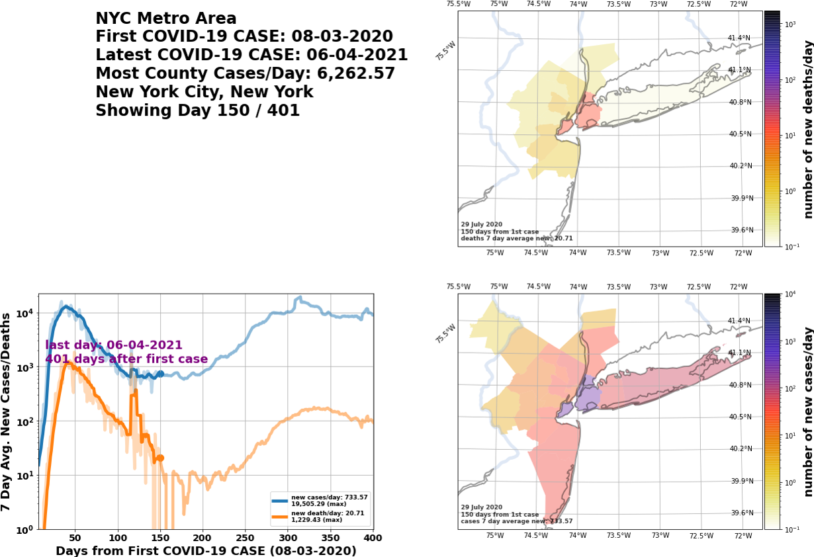
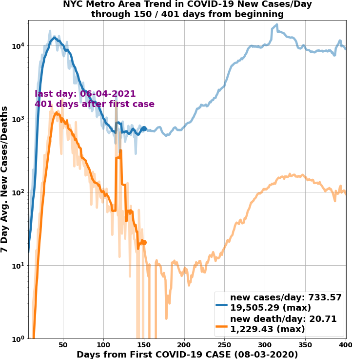
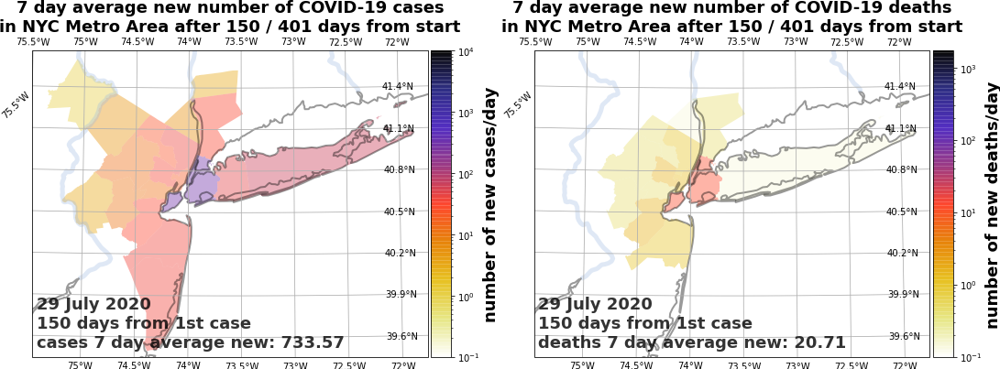
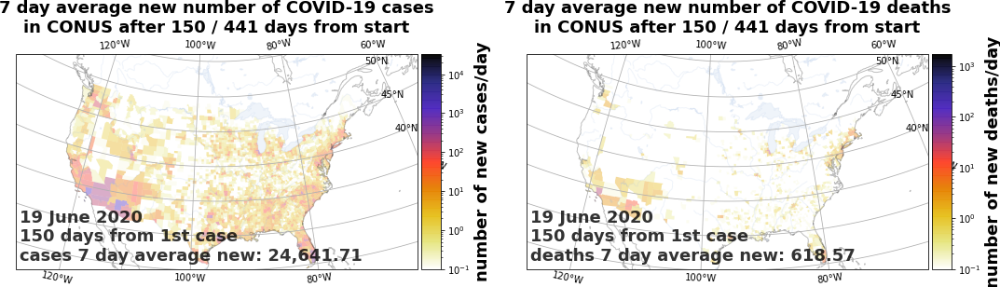

4.6. covid19_stats.engine.viz2 module¶
This module provides visualization methods for seven-day averaged and single-day averaged COVID-19 new cases/day and deaths/day for MSAs, states, and the CONUS. covid19_region_summary_rate is a front-end to the methods in this module. Methods in this module share many similarities to associated methods in the viz module.
- covid19_stats.engine.viz2.create_plots_rate_daysfrombeginning(inc_data, days_from_beginning=[7], dirname='/usr/WS2/islam5/covid19_stats/docsrc')¶
This method is similar to
create_plots_daysfrombeginningin thevizmodule. Creates a collection of quad PNG images (see Section 3.4.2) representing state of seven day averaged COVID-19 new cases/day and deaths/day for a geographical region. Like movie mode in covid19_region_summary_rate, the four quadrants are,upper leftis the summary information for the geographical region.lower leftis the running tally of seven-day averaged new cases/day and deaths/day, by day from first incident.upper rightis the logarithmic coloration of new deaths/day, by day from first incident.lower rightis the logarithmic coloration of new cases/day, by day from first incident.
create_summary_rate_movie_frombeginninguses this functionality in a multiprocessing fashion to create MP4 movie files for geographical regions. It is easier to show rather than tell. Fig. 4.11 is a quad plot of COVID-19 new cases/day and deaths/day for the NYC metro area, 150 days after this metro’s first COVID-19 incident, that is created by this function.Fig. 4.11 Quad plot of seven day averaged COVID-19 new cases/day and deaths/day for the NYC metro area, 150 days after its first incident. The name of the file is
covid19_nyc_LATEST.0143.png(150 days minus 7 days), so that FFmpeg can easily create movies; frames must start from all zeros in the file name, so day 7 would be0000.¶The collection of PNG images that this method creates are auto-cropped and, where needed, resized so that their widths and heights are even numbers. FFmpeg, run through
create_summary_rate_movie_frombeginning, cannot create an MP4 from PNGs unless the images’ widths and heights are divisible by 2.- Parameters
inc_data (dict) – the data for incidence of COVID-19 cases and deaths for a given geographical region. See
get_incident_datafor the format of the output data.days_from_beginning (list) – the
listof days to create quad PNG images. Must be nonempty, and every element must be \(\ge 0\). Default is[ 0, ].dirname (str) – the directory into which to save the quad PNG images. The default is the current working directory.
- Returns
the
listof filenames of PNG quad images that this method creates, intodirname. For example, in the method invocation shown in Fig. 4.11,days_from_beginning = [ 150, ], and the list this method returns is[ '<dirname>/covid19_nyc_LATEST.0143.png', ].- Return type
{kind=link}
- covid19_stats.engine.viz2.create_summary_cases_or_deaths_rate_movie_frombeginning(inc_data, type_disp='cases', dirname='/usr/WS2/islam5/covid19_stats/docsrc', save_imgfiles=False)¶
This method is similar to
create_summary_cases_or_deaths_movie_frombeginningin thevizmodule. This is the back-end method for movie cases deaths mode for covid19_region_summary_rate. This creates an MP4 movie file of seven-day averaged COVID-19 new cases/day or deaths/day, with identifying metadata, for a given geographical region. Table 4.4 shows the resulting MP4 movie files, of cumulative COVID-19 cases and deaths, for the NYC metro area (top row), and the state of Virginia (bottom row).Table 4.4 Latest seven-day averaged COVID-19 new cases/day, and deaths/day, for the NYC metro area and Virginia¶ NYC metro area, latest movie of COVID-19 new cases/day
NYC metro area, latest movie of COVID-19 new deaths/day
Virginia, latest movie of COVID-19 new cases/day
Virginia, latest movie of COVID-19 new deaths/day
Here are the arguments,
- Parameters
inc_data (dict) – the data for incidence of COVID-19 cases and deaths for a given geographical region. See
get_incident_datafor the format of the output data.type_disp – if
cases, then show cumulative COVID-19 cases. Ifdeaths, then show cumulative COVID-19 deaths. Can only becasesordeaths.dirname (str) – the directory into which to save the MP4 movie file, and optionally a zip archive of the PNG image files used to create the MP4 movie. The default is the current working directory.
save_imgfiles (bool) – if
True, then will create a zip archive of the PNG image files used to create the MP4 movie. Its full name is<dirname>/covid19_7day_<prefix>_<type_disp>_LATEST_imagefiles.zip.<dirname>is the directory to save the MP4 file,<prefix>is the region name prefix (for examplenycfor the NYC metro area) located ininc_data['prefix'], and<type_disp>is eithercasesordeath. The default isFalse.
- Returns
the base name of the MP4 movie file it creates. For example, if
inc_data['prefix']isnycandtype_dispiscases, this method returnscovid19_7day_nyc_cases_LATEST.mp4. This method also saves the MP4 file as<dirname>/covid19_7day_nyc_cases_LATEST.mp4, where<dirname>is the directory to save the MP4 file.- Return type
- covid19_stats.engine.viz2.create_summary_rate_movie_frombeginning(inc_data, dirname='/usr/WS2/islam5/covid19_stats/docsrc', save_imgfiles=False)¶
This method is similar to
create_summary_rate_movie_frombeginningin thevizmodule. This is the back-end method for movie mode for covid19_region_summary_rate. This creates an MP4 quad movie file of both seven day averaged COVID-19 new cases/day and deaths/day for a geographical region, and optionally a zip archive of PNG images used to create the MP4 file. This usescreate_plots_rate_daysfrombeginningin a multiprocessing fashion, to create sub-collections of PNG quad images, and then collate them into an MP4 file using FFmpeg. Table 4.5 shows the resulting MP4 movie files, of seven day averged COVID-19 new cases/day and deaths/day, for the NYC metro area and the state of Virginia.Table 4.5 Latest quad movies of COVID-19 for the NYC metro area and Virginia¶ NYC metro area, latest quad movie of COVID-19 new cases/day and deaths/day
Virginia, latest quad movie of COVID-19 new cases/day and deaths/day
Here are the arguments,
- Parameters
inc_data (dict) – the data for incidence of COVID-19 cases and deaths for a given geographical region. See
get_incident_datafor the format of the output data.dirname (str) – the directory into which to save the MP4 movie file, and optionally a zip archive of the PNG image files used to create the MP4 movie. The default is the current working directory.
save_imgfiles (bool) – if
True, then will create a zip archive of the PNG image files used to create the MP4 movie. Its full name is<dirname>/covid19_7day_<prefix>_LATEST_imagefiles.zip.<dirname>is the directory to save the MP4 file, and<prefix>is the region name prefix (for examplenycfor the NYC metro area) located ininc_data['prefix']. The default isFalse.
- Returns
the base name of the MP4 movie file it creates. For example, if
inc_data['prefix']isnyc, this method returnscovid19_7day_nyc_LATEST.mp4. This method also saves the MP4 file as<dirname>/covid19_7day_nyc_LATEST.mp4, where<dirname>is the directory to save the MP4 file.- Return type
- covid19_stats.engine.viz2.get_summary_demo_rate_data(inc_data, dirname='/usr/WS2/islam5/covid19_stats/docsrc', store_data=True)¶
This method is similar to
get_summary_demo_datain thevizmodule. This is the back-end method for show mode for covid19_region_summary_rate. This creates six or eight files for a given geographical region. Given an inputinc_datadict, it produces six files by default. Hereprefixis the value ofinc_data['prefix'](for examplenycfor the NYC metro area).covid19_7day_<prefix>_cases_LATEST.pdfandcovid19_7day_<prefix>_cases_LATEST.png: a PDF and PNG plot of the latest seven day averaged COVID-19 new cases/day for the geographical region.covid19_7day_<prefix>_death_LATEST.pdfandcovid19_7day_<prefix>_death_LATEST.png: a PDF and PNG plot of the latest seven day averaged COVID-19 new deaths/day for the geographical region.covid19_7day_<prefix>_cds_LATEST.pdfandcovid19_7day_<prefix>_cds_LATEST.png: a PDF and PNG plot of the latest seven day averaged COVID-19 new cases/day and deaths/day trend lines for the geographical region.
Optionally, one can choose to dump out two serialized
Pandas DataFramesof the new COVID-19 cases/day and deaths/day, total and per county.covid19_7day_<prefix>_LATEST.pkl.gzis the seven day averaged serializedPandas DataFramefor the region. This runs from the seventh day after first incident to the last day. An example for the NYC metro area iscovid19_7day_nyc_LATEST.pkl.gz.covid19_7day_<prefix>_LATEST.pkl.gzis the one day averaged serializedPandas DataFramefor the region. This runs from the first day after the first incident to the last day. An example for the NYC metro area iscovid19_1day_nyc_LATEST.pkl.gz.
Table 4.6 displays the latest output for the NYC metro area.
Table 4.6 Latest plots of cumulative COVID-19 cases, deaths, and trend lines for the NYC metro area¶ 


NYC metro area, plot of latest COVID-19 new cases/day
NYC metro area, plot of latest COVID-19 new deaths/day
NYC metro area, plot of latest trend lines of COVID-19 new cases/day and deaths/day
Here are the arguments.
- Parameters
inc_data (dict) – the data for incidence of COVID-19 cases and deaths for a given geographical region. See
get_incident_datafor the format of the output data.dirname (str) – the directory into which to save the six or seven files. The default is the current working directory.
store_data (bool) – if
True, then create two serializedPandas DataFramesof the COVID-19 cases and deaths, total and per county, up to the latest incident. Default isTrue.
- covid19_stats.engine.viz2.plot_cases_deaths_rate_region(inc_data, ax, days_from_beginning=7, doTitle=True, legend_text_scaling=1.0, aspect_ratio_mult=1.0)¶
This method is similar to
plot_cases_deaths_regionin thevizmodule. Plots trend lines of seven day averaged COVID-19 new cases/day and new deaths/day for a region. It is easier to show rather than tell. Fig. 4.12 depicts trend lines of COVID-19 new cases/day and deaths/day for the NYC metro area, 150 days after this metro’s first COVID-19 incident.Fig. 4.12 Plot of seven day averaged COVID-19 new cases/day and deaths/day for the NYC metro area, 150 days after its first incident. Plot scaling is logarithmic, and dots accentuate the state of the new cases/day and deaths/day 150 days after first incident. We have chosen to display the title. The lower-alpha and more jagged lines depict the one-day averaged new cases/day and deaths/day.¶
Here are the arguments.
- Parameters
inc_data (dict) – the data for incidence of COVID-19 cases and deaths for a given geographical region. See
get_incident_datafor the format of the output data.ax – the
Axesonto which to make this plot.days_from_beginning (int) – days after first incident of COVID-19 in this region. Must be \(\ge 7\) because of the seven day average.
doTitle (bool) – if
True, then display the title over the plot. Default isTrue.legend_text_scaling (float) – sometimes the legend text for the cumulative COVID-19 cases and deaths is too large. This is a multiplier on that text’s font size. Default is 1.0, but must be \(> 0\).
aspect_ratio_mult (float) – in the quad plots created in
create_plots_rate_daysfrombeginningor increate_summary_rate_movie_frombeginning, without modification theAxesmay look too squashed and inconsistent with the three otherAxesorGeoAxes. This acts as a multiplier on the aspect ratio so that thisAxesdoes not look out of place. Default is 1.0, but must be \(> 0\).
{kind=link}
- covid19_stats.engine.viz2.plot_cases_or_deaths_rate_bycounty(inc_data, fig, type_disp='cases', days_from_beginning=7, doTitle=True, plot_artists={}, poly_line_width=1.0, legend_text_scaling=1.0, doSmarter=False, rows=1, cols=1, num=1)¶
This method is similar to
plot_cases_or_deaths_bycountyin thevizmodule. This displays the status of seven-day averaged COVID-19 new cases/day or deaths/days given an incidident datadict,inc_data. It displays the status of seven-day averaged COVID-19 new cases/day or deaths/day, a specific number of days from the beginning, coloring the counties in that region according to the legend maximum, and places the resultingGeoAxesat a specific location in aFiguregrid ofAxesorGeoAxes.Instead of returning a
GeoAxes, this initializes adictof matplotlib objects,plot_artists. In this way, subsequent plots, e.g. for different days after the beginnning, do not have to perform the relatively costly operation of recreating theGeoAxesand fully painting in thePolygonpatches; instead, thesePolygonpatches are re-colored and necessaryTextartists’ strings are changed.This
dict,plot_artists, has the following keys, identical to those inplot_cases_or_deaths_bycounty,axes: when initialized, theGeoAxesthat consists of all counties, with COVID-19 cases or deaths, to display.sm: theScalarMappabledescribing the coloration by value for each county.
Furthermore, it is easier to show rather than tell. Fig. 4.13 depicts both seven-day averaged COVID-19 new cases/day and deaths/day for the NYC metro area, 150 days after this metro’s first COVID-19 incident.
Fig. 4.13 On the left, is the seven-day averaged COVID-19 new cases/day, and on the right, is the COVID-19 new deaths/day, for the NYC metro area, 150 days after its first COVID-19 incident. The color limits for cases (left) is \(10^4\) cases/day, while the color limits for death (right) is \(1.7\times 10^3\) deaths/day. We have chosen to display the titles over both plots. Color scaling is logarithmic.¶
Fig. 4.14 depicts both seven day averaged COVID-19 new cases/day and deaths/day for the CONUS, 150 days after its first COVID-19 incident.
Fig. 4.14 On the left, is the seven-day averaged COVID-19 new cases/day, and on the right, is the COVID-19 new deaths/day, for the CONUS, 150 days after its first COVID-19 incident. The color limits for cases (left) is \(3.2\times 10^4\) cases/day, while the color limits for death (right) is \(1.7\times 10^3\) deaths/day. We have chosen to display the titles over both plots. Color scaling is logarithmic.¶
Here are the arguments.
- Parameters
inc_data (dict) – the data for incidence of COVID-19 cases and deaths for a given geographical region. See
get_incident_datafor the format of the output data.fig – the
Figureonto which to create aGeoAxes(stored into theplot_artistsdict) containing geographic features. Last three arguments –rows,cols, andnum– describe the relative placement of the createdGeoAxes. Seeadd_subplotfor those three arguments’ meanings.type_disp (str) – if
cases, then show cumulative COVID-19 cases. Ifdeaths, then show cumulative COVID-19 deaths. Can only becasesordeaths.days_from_beginning (int) – days after first incident of COVID-19 in this region. Must be \(\ge 7\), due to the seven-day rolling average.
doTitle (bool) – if
True, then display the title over the plot. Default isTrue.plot_artists (dict) – this contains the essential plotting objects for quicker re-display when plotting different days. Look at this description.
poly_line_width (float) – the line width of the counties to draw in the plot.
legend_text_scaling (float) – sometimes the text annotations showing the date, number of incident days, and cumulative deaths or cases is too large. This is a multiplier on that text’s font size. Default is 1.0, but must be \(> 0\).
doSmarter (bool) – if
False, then make a plot tailored for small regions (relative to the size of the earth), such as states or MSAs. IfTrue, then make a plot tailored for large regions such as the CONUS. Default isFalse.rows (int) – the number of rows for axes in the
Figuregrid. Must be \(\ge 1\), and by default is 1.cols (int) – the number of columns for axes in the
Figuregrid. Must be \(\ge 1\), and by default is 1.num (int) – the plot number of the
GeoAxesin thisFiguregrid. Must be \(\ge 1\) and \(\le\)rowstimescolumns. Its default is 1. Look atadd_subplotfor its meaning.
{kind=link}
{kind=link}